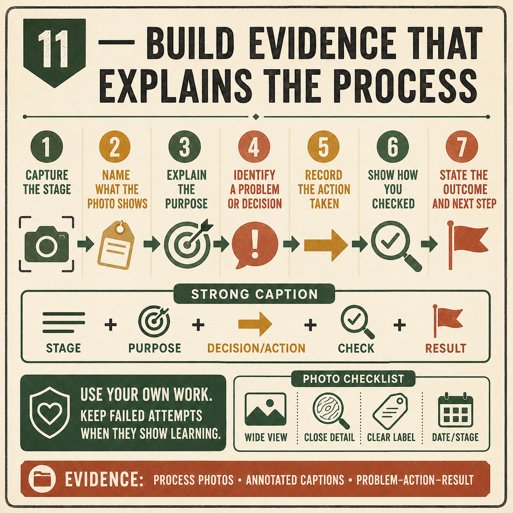
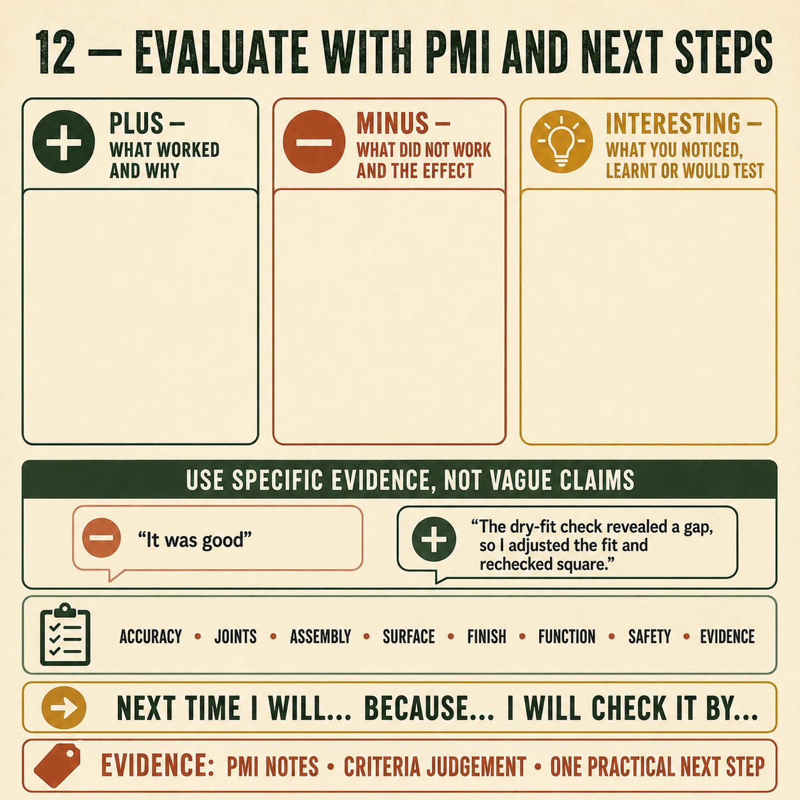

Weeks 19-20
This module
Build a traceable folio, explain one genuine correction and evaluate the completed Carry-All with balanced evidence.
Your work
Student details
Your entries save automatically in this browser. Use Print / Save PDF before leaving the page.
Theory 1
Building a traceable Carry-All evidence folio

A traceable evidence folio shows how the Carry-All developed from the working drawing into a completed product. It should connect planning, safe work, practical decisions, quality checks and evaluation in a clear sequence. The folio is not simply a collection of attractive final photographs. It should allow another person to follow what happened, understand why decisions were made and see evidence that the completed work matches the brief and teacher directions.
Progress photographs should be purposeful and taken at stages where important work can still be seen. Useful examples may include material inspection, marked components, corner-joint preparation, rebates or housings where shown, handle development, dry assembly, adhesive and clamping, surface preparation and finishing stages. A photograph should show the relevant feature clearly without unsafe positioning near practical work. Follow school rules for devices, privacy and photography, and avoid including identifiable faces unless permission and local procedures allow it.
Each photograph needs a caption that explains more than the image alone. A strong caption identifies the stage, describes the action, names the check completed and records the result. For example, a dry-assembly caption could explain that the corner joints were seated, the base and dividers were checked for fit, and one alignment problem was corrected before adhesive was applied. This creates a traceable link between the evidence and the practical decision.
- Place evidence in the order that the work occurred.
- Include relevant drawings, annotations and verified specifications.
- Connect SWMS controls to the practical stages where they were applied.
- Record problems, approved corrections and quality-check results honestly.
- Use clear filenames, dates or headings so evidence can be located easily.
Drawings and planning records show what was intended, while photographs and captions show what was actually completed. The SWMS demonstrates how hazards and controls were considered through the sequence. Decision records should explain choices such as material placement, joint checks or responses to faults. Evidence of a mistake is not automatically weak evidence. When it clearly shows the cause, approved correction and improved result, it demonstrates problem-solving and practical understanding.
The final evaluation should draw directly from the recorded evidence. Statements about accuracy, workmanship, function or safety should refer to specific photographs, checks or records rather than unsupported opinion. A well-organised folio makes the Carry-All process verifiable and authentic, showing both the quality of the product and the thinking used to manufacture it.
Theory 2
Diagnosing and correcting Carry-All problems
Problem-solving begins by separating the visible symptom from its possible cause. A tight joint, loose joint, out-of-square dry assembly or visible finish defect tells you that something is wrong, but not necessarily why. Acting on the first guess can make the problem worse. Instead, stop, inspect the relevant components and compare them with the working drawing, reference marks, teacher directions and earlier process evidence.
A useful diagnosis follows the sequence: symptom, possible cause, check, approved correction and result. For example, a tight corner joint may be caused by a high spot, incorrect orientation, inaccurate marking or damage rather than the whole joint being oversized. Before removing timber, check where the parts contact and whether they are entering squarely. Any correction should target the verified cause and use the teacher-approved process.
- Describe the symptom clearly and identify when it appeared.
- List the most likely causes without assuming the first one is correct.
- Use measurements, reference marks, dry fitting or visual inspection to test each cause.
- Seek teacher approval before altering a component, joint or finished surface.
- Record the correction and check whether the result improved.
A loose joint cannot be restored by removing more timber, and excessive adhesive should not be treated as a reliable gap-filling solution. An out-of-square dry fit may result from a corner joint that has not seated, mismatched housings, incorrect component orientation or uneven pressure during trial assembly. Tightening clamps or forcing parts together before finding the cause can introduce bow, twist or damage.
Visible finish defects also require diagnosis before correction. Uneven appearance, roughness, contamination, missed areas or runs may have different causes and therefore need different responses. Do not immediately sand, wipe or add more product. Protect the project, identify the condition and refer to the approved product directions, SDS and teacher guidance. Finish corrections must remain product-specific and locally approved.
Strong problem-solving evidence shows what was observed, how the cause was tested and whether the approved correction worked. Honest evidence of a fault can demonstrate more understanding than a vague claim that everything went well. The aim is not to hide mistakes, but to prevent unnecessary damage, make a reasoned correction and learn from the result.
Theory 3
Using PMI to evaluate the completed Carry-All

PMI stands for Plus, Minus and Interesting. It provides a clear structure for evaluating the completed Carry-All without reducing the judgement to “good” or “bad”. A strong PMI uses evidence from the working drawing, project brief, SWMS, process photographs and final quality checks. Each statement should identify a specific feature, explain why it matters and refer to an observable or measurable result.
The Plus section identifies successful aspects of the product and process. These may relate to function, craftsmanship, safe work, responsible material use or compliance with the brief. For example, evidence might show that the corner joints seated accurately, the base and dividers remained secure, the handle functioned as intended, the structure stayed stable or the approved finish appeared consistent. A valid strength must be supported by a photograph, measurement, inspection result or process record.
The Minus section identifies a genuine limitation rather than making a vague negative comment. It may describe a visible gap, slight misalignment, rough transition, finish inconsistency, avoidable waste or stage where planning could have been stronger. Explain the likely cause and its effect on function, appearance, safety or efficiency. Honest evaluation is more useful than hiding faults, but the judgement must remain fair and based on evidence.
- Plus: What worked well, and what evidence proves it
- Minus: What limitation remains, what caused it and why does it matter
- Interesting: What unexpected result, process insight or production comparison was discovered
- Improvement: What realistic change would produce a better result next time
- Brief check: How well does the completed Carry-All meet the approved requirements
The Interesting section records learning that is neither simply positive nor negative. This might include how small marking errors affected later assembly, how dry fitting prevented a larger problem, or how grain and material condition influenced workmanship. It can also compare hand production with industrial manufacture. Hand-making depends heavily on individual control, judgement and progressive fitting, while industrial production may use specialised machinery, jigs or computer-controlled systems for consistency and repetition. Both still require planning, safety and quality checking.
Finish with one realistic improvement linked to an identified cause. Avoid impossible claims such as making every part perfect. A useful improvement might involve checking references earlier, completing more deliberate scrap practice, improving evidence timing or using an additional approved hold point. The final judgement should bring together function, craftsmanship, safety, sustainability and compliance with the brief.
Guided practice
Weeks 19-20 knowledge checks
Choose an answer, check it and use the progressive hints and feedback to improve.
Apply your learning
Scaffolded written responses
Write first, use the feedback prompts, then compare your reasoning with the appropriate response example.
Finish the two-week block
Save your evidence
Your work saves in this browser, but browser storage is not the official submission. Save the completed page as a PDF before changing devices or clearing browser data.
No marks, answers or personal information are sent from this webpage.